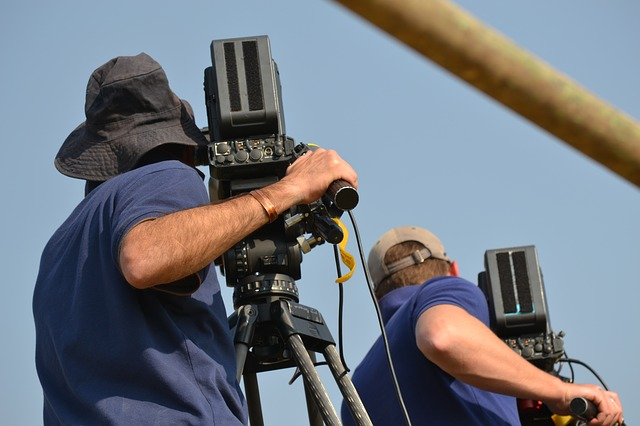

Kręcenie filmów
Większość z nas pewnie nieraz nakręciła filmik swoim smartphonem. Można jednak pójść o krok dalej i rozwinąć tę pasję.
Zainteresować może tworzenie krótkich filmów dokumentujących wydarzenia aktualne. Można nagrywać tak zwane „vlogi”, które mogą nam posłużyć jako wpisy z dziennika. Kuszącą propozycją wydaje się także nagrania rodziny i przyjaciół, na których opowiadają oni coś aktualnego i pozdrawiają widzów z przyszłości. Takie filmy zgromadzone na pendrive lub innym nośniku danych mogą się okazać wspaniałą pamiątką.
Kolejnym interesującym projektem może być nagranie filmu krótkometrażowego. Można zaangażować do tego też bliskich i przyjaciół. Wystarczy wpaść na interesujący pomysł, spisać podstawowy scenariusz i nagrać sceny. Jeśli chodzi o montaż to można się zająć tym samemu, lub poprosić znajomego, który się tym zajmuje. Taki film można nagrać nawet telefonem, nie potrzeba profesjonalnego sprzętu.
Poniżej znajduje się link do poradnika o amatorskim nagrywaniu filmów telefonem oraz link do programu do montażu, który ma darmową wersję.
Jak nagrać dobry film telefonem
Davinci Resolve - darmowy profesjonalny program do montażu
